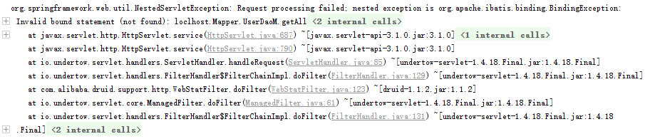

<!DOCTYPE html>
<html>
<head><meta name="generator" content="Hexo 3.9.0">
    <meta charset="UTF-8">
    <meta name="viewport" content="width=device-width, initial-scale=1, maximum-scale=1">
    
    <meta name="author" content="挥手の骑士">
    
    
    
    
    
    
    <title>SpringBoot 整合 Mybatis 爬坑之路 | 骑士の物语</title>
    <link href="https://yihuishou.github.io" rel="prefetch">

    <link rel="stylesheet" href="/css/bootstrap.min.css">
<link rel="stylesheet" href="/css/aos.css">
<link rel="stylesheet" href="/css/style.css">
    <script src="/js/jquery.min.js"></script>
    <script src="/js/bootstrap.min.js"></script>
    <script src="/js/aos.js"></script>
    <script src="/js/highslide/highslide-full.min.js"></script>
    <link rel="stylesheet" href="/js/highslide/highslide.css">
    <style type="text/css">
        @media (max-width: 768px) {
            body {
                background-color: #f0f0f0;
                background: url('/imgs/xsbg.gif');
                background-attachment: fixed;
            }
        }
    </style>
    
    <!--<script type="text/javascript">
      if (document.images) {
        var avatar = new Image();
        avatar.src = '/imgs/avatar.jpg'
        var previews = 'picHD_1.png,picHD_2.png,picHD_3.png,picHD_4.png,picHD_5.png,picHD_6.png,picHD_7.png,picHD_8.png,picHD_9.png,picHD_10.png,picHD_11.png,picHD_12.png,picHD_13.png,picHD_14.png,picHD_15.png,picHD_16.png,picHD_17.png,picHD_18.png,picHD_19.png,picHD_20.png,picHD_21.png,picHD_22.png,picHD_23.png,picHD_24.png,picHD_25.png,picHD_26.png,picHD_27.png,picHD_28.png,picHD_29.png,picHD_30.png,picHD_31.png,picHD_32.png,picHD_33.png,picHD_34.png,picHD_35.png,picHD_36.png,picHD_37.png,picHD_38.png,picHD_39.png,picHD_40.png,picHD_41.png,picHD_42.png'.split(',')
        var previewsPreLoad = []
        for(var i = 0; i < length; i++) {
          previewsPreLoad.push(new Image())
          previewsPreLoad[previewsPreLoad.length - 1].src = '/imgs/preview' + previews[i]
        }
      }
    </script>-->
</head></html>
<body>
    <!-- 背景轮播图功能 -->
    <section class="hidden-xs">
    <ul class="cb-slideshow">
        <li><span>天若</span></li>
        <li><span>有情</span></li>
        <li><span>天亦老</span></li>
        <li><span>我为</span></li>
        <li><span>长者</span></li>
        <li><span>续一秒</span></li>
    </ul>
</section>
    <!-- 欧尼酱功能, 谁用谁知道 -->
    
    <header class="navbar navbar-inverse" id="gal-header">
    <div class="container">
        <div class="navbar-header">
            <button type="button" class="navbar-toggle collapsed"
                    data-toggle="collapse" data-target=".bs-navbar-collapse"
                    aria-expanded="false">
                <span class="fa fa-lg fa-reorder"></span>
            </button>
            <a href="https://yihuishou.github.io">
                
                <style>
                    #gal-header .navbar-brand {
                        height: 54px;
                        line-height: 24px;
                        font-size: 28px;
                        opacity: 1;
                        background-color: rgba(0,0,0,0);
                        text-shadow: 0 0 5px #fff,0 0 10px #fff,0 0 15px #fff,0 0 20px #228DFF,0 0 35px #228DFF,0 0 40px #228DFF,0 0 50px #228DFF,0 0 75px #228DFF;
                    }
                </style>
                <!-- 这里使用文字(navbar_text or config.title) -->
                <div class="navbar-brand">骑士の物语</div>
                
            </a>
        </div>
        <div class="collapse navbar-collapse bs-navbar-collapse">
            <ul class="nav navbar-nav" id="menu-gal">
                
                
                <li class="">
                    <a href="/">
                        <i class="fa fa-home"></i>首页
                    </a>
                </li>
                
                
                
                <li class="">
                    <a href="/archives">
                        <i class="fa fa-archive"></i>归档
                    </a>
                </li>
                
                
            </ul>
        </div>
    </div>
</header>
    <div id="gal-body">
        <div class="container">
            <div class="row">
                <div class="col-md-8 gal-right" id="mainstay">
                    
<article class="article well article-body" id="article">
    <div class="breadcrumb">
        <i class="fa fa-home"></i>
        <a href="https://yihuishou.github.io">骑士の物语</a>
        >
        <span>SpringBoot 整合 Mybatis 爬坑之路</span>
    </div>
    <!-- 大型设备详细文章 -->
    <div class="hidden-xs">
        <div class="title-article">
            <h1>
                <a href="/2017/10/23/618326027/">SpringBoot 整合 Mybatis 爬坑之路</a>
            </h1>
        </div>
        <div class="tag-article">
            
            <span class="label label-gal">
                <i class="fa fa-tags"></i>
                
                <a href="/tags/SpringBoot/">SpringBoot</a>
                
            </span>
            
            <span class="label label-gal">
                <i class="fa fa-calendar"></i> 2017-10-23
            </span>
            
        </div>
    </div>
    <!-- 小型设备详细文章 -->
    <div class="visible-xs">
        <center>
            <div class="title-article">
                <h4>
                    <a href="/2017/10/23/618326027/">SpringBoot 整合 Mybatis 爬坑之路</a>
                </h4>
            </div>
            <p>
                <i class="fa fa-calendar"></i> 2017-10-23
            </p>
            <p>
                
                <i class="fa fa-tags"></i>
                
                <a href="/tags/SpringBoot/">SpringBoot</a>
                
                
                
            </p>
        </center>
    </div>
    <div class="content-article">
        <p>最近一直在学习SpringBoot的相关内容，在整合Mybaits的时候踩了个大坑。</p>
<p>尤其是使用了IDEA编辑器，而且还使用了由IDEA生成的目录结构的情况下。我这两个都赶上了…</p>
<p>这个坑的原理其实也很简单：</p>
<p>IDEA在编译程序的时候是<strong>不会</strong>把标记为源码目录中的静态资源文件发布出去的…</p>
<p>所以，要是像在eclipse中那样把Mybatis的mapper文件和源码放在同一目录中的话,就会导致下面的错误：</p>
<p></p>
<p>也就是Mybaits无法找到mapper的错误。</p>
<p>解决办法有两种：</p>
<ul>
<li>1.将mapper文件放到resource资源目录中，然后修改SpringBoot的配置文件</li>
</ul>
<p><code>mybatis.mapper-locations:  classpath:xxx/*.xml</code> 重新指定SpringBoot的扫描目录</p>
<ul>
<li><p>2.直接使用Mybatis的注解方式进行mapper配置则不会触发上面的问题</p>
</li>
<li><p>3.在pom配置文件中添加打包配置</p>
</li>
</ul>
<figure class="highlight xml"><table><tr><td class="code"><pre><span class="line">[java] view plain copy</span><br><span class="line"><span class="tag">&lt;<span class="name">resources</span>&gt;</span>  </span><br><span class="line">    <span class="tag">&lt;<span class="name">resource</span>&gt;</span>  </span><br><span class="line">        <span class="tag">&lt;<span class="name">directory</span>&gt;</span>src/main/java<span class="tag">&lt;/<span class="name">directory</span>&gt;</span>  </span><br><span class="line">            <span class="tag">&lt;<span class="name">includes</span>&gt;</span>  </span><br><span class="line">                <span class="tag">&lt;<span class="name">include</span>&gt;</span>**/*.properties<span class="tag">&lt;/<span class="name">include</span>&gt;</span> </span><br><span class="line">                <span class="tag">&lt;<span class="name">include</span>&gt;</span>**/*.xml<span class="tag">&lt;/<span class="name">include</span>&gt;</span>  </span><br><span class="line">            <span class="tag">&lt;/<span class="name">includes</span>&gt;</span>  </span><br><span class="line">                <span class="tag">&lt;<span class="name">filtering</span>&gt;</span>false<span class="tag">&lt;/<span class="name">filtering</span>&gt;</span>  </span><br><span class="line">    <span class="tag">&lt;/<span class="name">resource</span>&gt;</span>  </span><br><span class="line"><span class="tag">&lt;/<span class="name">resources</span>&gt;</span></span><br></pre></td></tr></table></figure>
    </div>
</article>


                </div>
                <aside class="col-md-4 gal-left" id="sidebar">
    <!-- 此为sidebar的搜索框, 非搜索结果页面 -->
<aside id="sidebar-search">
    <div class="search hidden-xs" data-aos="fade-up" data-aos-duration="2000">
        <form class="form-inline clearfix" id="search-form" method="get"
              action="/search/index.html">
            <input type="text" name="s" class="form-control" id="searchInput" placeholder="搜索文章~" autocomplete="off">
            <button class="btn btn-danger btn-gal" type="submit">
                <i class="fa fa-search"></i>
            </button>
        </form>
    </div>
</aside>
    <aside id="sidebar-author">
    <div class="panel panel-gal" data-aos="flip-right" data-aos-duration="3000">
        <div class="panel-heading" style="text-align: center">
            <i class="fa fa-quote-left"></i>
            挥手の骑士
            <i class="fa fa-quote-right"></i>
        </div>
        <div class="author-panel text-center">
            
            <p class="author-description"></p>
        </div>
    </div>
</aside>
    
    <!-- 要配置好leancloud才能开启此小工具 -->
    
    
    <aside id="sidebar-recent_posts">
    <div class="panel panel-gal recent hidden-xs" data-aos="fade-up" data-aos-duration="2000">
        <div class="panel-heading">
            <i class="fa fa-refresh"></i>
            近期文章
            <i class="fa fa-times-circle panel-remove"></i>
            <i class="fa fa-chevron-circle-up panel-toggle"></i>
        </div>
        <ul class="list-group list-group-flush">
            
            <li class="list-group-item">
                <span class="post-title">
                    <a href="/2020/10/10/2/"></a>
                </span>
            </li>
            
            <li class="list-group-item">
                <span class="post-title">
                    <a href="/2020/08/18/55226946/">Agent v3.2.1 插件激活码</a>
                </span>
            </li>
            
            <li class="list-group-item">
                <span class="post-title">
                    <a href="/2020/07/21/2412014068/">干掉 CMS 未来属于 ZGC</a>
                </span>
            </li>
            
            <li class="list-group-item">
                <span class="post-title">
                    <a href="/2020/07/21/4075219928/">OpenJDK 和 OracleJDK 的抉择</a>
                </span>
            </li>
            
            <li class="list-group-item">
                <span class="post-title">
                    <a href="/2020/07/20/368594680/">Flutter 音乐播放器开发之路（一）</a>
                </span>
            </li>
            
            <li class="list-group-item">
                <span class="post-title">
                    <a href="/2020/07/15/3650854255/">XaaS 到底是什么？</a>
                </span>
            </li>
            
            <li class="list-group-item">
                <span class="post-title">
                    <a href="/2020/07/15/4036766117/">让 Windows 10 开机自动登录</a>
                </span>
            </li>
            
            <li class="list-group-item">
                <span class="post-title">
                    <a href="/2020/07/14/466733536/">给 Flutter 项目初始化构建提个速</a>
                </span>
            </li>
            
            <li class="list-group-item">
                <span class="post-title">
                    <a href="/2020/06/12/4125727764/">JavaScript 中 Splice 函数与数组塌陷</a>
                </span>
            </li>
            
            <li class="list-group-item">
                <span class="post-title">
                    <a href="/2020/06/12/1586694155/">在 Java 中缩写 Lambda 表达式</a>
                </span>
            </li>
            
        </ul>
    </div>
</aside>
    
    
    <aside id="sidebar-rand_posts">
    <div class="panel panel-gal recent hidden-xs" data-aos="fade-up" data-aos-duration="2000">
        <div class="panel-heading">
            <i class="fa fa-refresh"></i>
            随机文章
            <i class="fa fa-times-circle panel-remove"></i>
            <i class="fa fa-chevron-circle-up panel-toggle"></i>
        </div>
        <ul class="list-group list-group-flush">
            
            
            <li class="list-group-item">
                <span class="post-title">
                    <a href="/2019/06/04/2575550749/">Git 提交消息模板规范</a>
                </span>
            </li>
            
            <li class="list-group-item">
                <span class="post-title">
                    <a href="/2018/04/24/2553779906/">PL/SQL Developer 连接远程数据库</a>
                </span>
            </li>
            
            <li class="list-group-item">
                <span class="post-title">
                    <a href="/2018/12/21/1183918086/">Return 与 Finally 的执行顺序</a>
                </span>
            </li>
            
            <li class="list-group-item">
                <span class="post-title">
                    <a href="/2017/10/23/618326027/">SpringBoot 整合 Mybatis 爬坑之路</a>
                </span>
            </li>
            
            <li class="list-group-item">
                <span class="post-title">
                    <a href="/2019/03/25/1700353500/">SpringDataJPA 效率优化</a>
                </span>
            </li>
            
            <li class="list-group-item">
                <span class="post-title">
                    <a href="/2018/09/07/2218955800/">StringBuilder().append() 方法真的比 + 更快吗</a>
                </span>
            </li>
            
            <li class="list-group-item">
                <span class="post-title">
                    <a href="/2019/01/21/3194033158/">Tensorflow 安装注意事项</a>
                </span>
            </li>
            
            <li class="list-group-item">
                <span class="post-title">
                    <a href="/2017/09/27/3303306385/">关于 Mdui 主题中的一些设置问题</a>
                </span>
            </li>
            
            <li class="list-group-item">
                <span class="post-title">
                    <a href="/2018/01/22/2822032196/">关于医疗用药</a>
                </span>
            </li>
            
            <li class="list-group-item">
                <span class="post-title">
                    <a href="/2018/11/22/2885027022/">简明 ES6/7</a>
                </span>
            </li>
            
        </ul>
    </div>
</aside>
    
    
    <aside id="gal-sets">
        <div class="panel panel-gal hidden-xs" data-aos="fade-up" data-aos-duration="2000">
            <ul class="nav nav-pills pills-gal">

                
                <li>
                    <a href="/2017/10/23/618326027/index.html#sidebar-tags" data-toggle="tab" id="tags-tab">热门标签</a>
                </li>
                
                
                <li>
                    <a href="/2017/10/23/618326027/index.html#sidebar-friend-links" data-toggle="tab" id="friend-links-tab">友情链接</a>
                </li>
                
                
                <li>
                    <a href="/2017/10/23/618326027/index.html#sidebar-links" data-toggle="tab" id="links-tab">个人链接</a>
                </li>
                
            </ul>
            <div class="tab-content">
                
                <div class="cloud-tags tab-pane nav bs-sidenav fade" id="sidebar-tags">
    
    <a href="/tags/SpringSecurity/" style="font-size: 10.366296660512557px;" class="tag-cloud-link">SpringSecurity</a>
    
    <a href="/tags/随笔/" style="font-size: 17.10110114066098px;" class="tag-cloud-link">随笔</a>
    
    <a href="/tags/Xml/" style="font-size: 12.058326365928105px;" class="tag-cloud-link">Xml</a>
    
    <a href="/tags/大前端/" style="font-size: 12.522994845788073px;" class="tag-cloud-link">大前端</a>
    
    <a href="/tags/Flutter/" style="font-size: 16.984798767738894px;" class="tag-cloud-link">Flutter</a>
    
    <a href="/tags/Dart/" style="font-size: 9.758158334068098px;" class="tag-cloud-link">Dart</a>
    
    <a href="/tags/Go/" style="font-size: 11.02084809501108px;" class="tag-cloud-link">Go</a>
    
    <a href="/tags/IDEA/" style="font-size: 16.24747148414191px;" class="tag-cloud-link">IDEA</a>
    
    <a href="/tags/Java/" style="font-size: 17.885890573971263px;" class="tag-cloud-link">Java</a>
    
    <a href="/tags/JavaScript/" style="font-size: 15.723461070457738px;" class="tag-cloud-link">JavaScript</a>
    
    <a href="/tags/Oracle/" style="font-size: 14.037511838242274px;" class="tag-cloud-link">Oracle</a>
    
    <a href="/tags/Photoshop/" style="font-size: 17.026836588114268px;" class="tag-cloud-link">Photoshop</a>
    
    <a href="/tags/Restful/" style="font-size: 17.711562951539022px;" class="tag-cloud-link">Restful</a>
    
    <a href="/tags/RPG-Maker-MV/" style="font-size: 15.274153098890707px;" class="tag-cloud-link">RPG Maker MV</a>
    
    <a href="/tags/SQL/" style="font-size: 14.781415887891022px;" class="tag-cloud-link">SQL</a>
    
    <a href="/tags/SpringBoot/" style="font-size: 17.20521291246638px;" class="tag-cloud-link">SpringBoot</a>
    
    <a href="/tags/Swagger/" style="font-size: 11.009602941396341px;" class="tag-cloud-link">Swagger</a>
    
    <a href="/tags/Windows/" style="font-size: 11.639413865740407px;" class="tag-cloud-link">Windows</a>
    
    <a href="/tags/Deepleanring/" style="font-size: 16.481217687584618px;" class="tag-cloud-link">Deepleanring</a>
    
    <a href="/tags/Vue/" style="font-size: 13.003620295720593px;" class="tag-cloud-link">Vue</a>
    
    <a href="/tags/Mysql/" style="font-size: 10.986093340249672px;" class="tag-cloud-link">Mysql</a>
    
    <a href="/tags/Docker/" style="font-size: 10.738902531291831px;" class="tag-cloud-link">Docker</a>
    
    <a href="/tags/Hexo/" style="font-size: 13.786508346125114px;" class="tag-cloud-link">Hexo</a>
    
    <a href="/tags/VsCode/" style="font-size: 10.446610843164136px;" class="tag-cloud-link">VsCode</a>
    
    <a href="/tags/SpringCloud/" style="font-size: 12.396429335768044px;" class="tag-cloud-link">SpringCloud</a>
    
    <a href="/tags/Redis/" style="font-size: 13.380502381569299px;" class="tag-cloud-link">Redis</a>
    
</div>
                
                
                <div class="friend-links tab-pane nav bs-sidenav fade" id="sidebar-friend-links">
    
    <li>
        <a href="http://noodlefighter.com" target="_blank">虾包</a>
    </li>
    
    <li>
        <a href="https://loli.la" target="_blank">超级叫了</a>
    </li>
    
    <li>
        <a href="https://konata9.github.io" target="_blank">吃土的小此方</a>
    </li>
    
</div>
                
                
                <div class="links tab-pane nav bs-sidenav fade" id="sidebar-links">
    
    <li>
        <a href="https://github.com/yihuishou" target="_blank">Github</a>
    </li>
    
    <li>
        <a href="https://gite.com/yihuishou" target="_blank">码云</a>
    </li>
    
    <li>
        <a href="https://www.zhihu.com/people/hei-yi-tian-shi-48" target="_blank">知乎</a>
    </li>
    
</div>
                
            </div>
        </div>
    </aside>
    
</aside>
            </div>
        </div>
    </div>
    <footer id="gal-footer">
    <div class="container">
        Copyright © 2018 挥手の骑士 Powered by <a href="https://hexo.io/" target="_blank">Hexo</a>.&nbsp;Theme by <a href="https://github.com/ZEROKISEKI" target="_blank">AONOSORA</a>
    </div>
</footer>

<!-- 回到顶端 -->
<div id="gal-gotop">
    <i class="fa fa-angle-up"></i>
</div>
</body>
<script src="/js/activate-power-mode.js"></script>
<script>

    // 配置highslide
	hs.graphicsDir = '/js/highslide/graphics/'
    hs.outlineType = "rounded-white";
    hs.dimmingOpacity = 0.8;
    hs.outlineWhileAnimating = true;
    hs.showCredits = false;
    hs.captionEval = "this.thumb.alt";
    hs.numberPosition = "caption";
    hs.align = "center";
    hs.transitions = ["expand", "crossfade"];
    hs.lang.number = '共%2张图, 当前是第%1张';
    hs.addSlideshow({
      interval: 5000,
      repeat: true,
      useControls: true,
      fixedControls: "fit",
      overlayOptions: {
        opacity: 0.75,
        position: "bottom center",
        hideOnMouseOut: true
      }
    })

    // 初始化aos
    AOS.init({
      duration: 1000,
      delay: 0,
      easing: 'ease-out-back'
    });

</script>
<script>
	POWERMODE.colorful = 'true';    // make power mode colorful
	POWERMODE.shake = 'true';       // turn off shake
	// TODO 这里根据具体情况修改
	document.body.addEventListener('input', POWERMODE);
</script>
<script>
    window.slideConfig = {
      prefix: '/imgs/slide/background',
      ext: 'jpg',
      maxCount: '6'
    }
</script>
<script src="/js/hs.js"></script>
<script src="/js/blog.js"></script>


</html>